Chapter 5: Docker Compose
Overview
This chapter covers Docker Compose for defining and running multi-container applications.
Objective
- Can explain what objects that docker compose can create.
- Can explain structure of docker-compose.yaml files
- Can write and fix error in docker-compose.yaml
- Can deploy application with docker-compose.yaml
Assignment: Create Student's Submission along tutorial
- Student will submit Screen of Docker installation process according to step-by-step from manual.
- Student can use Basic Template Download or generate own version.
Introduction
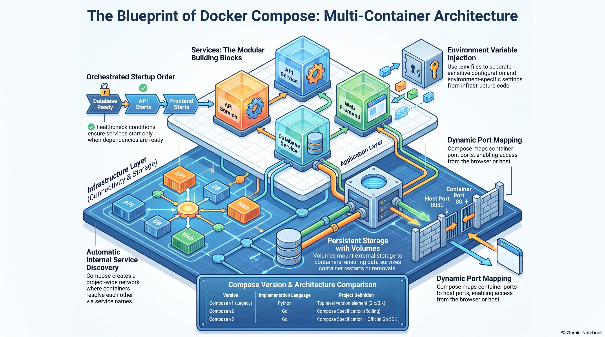
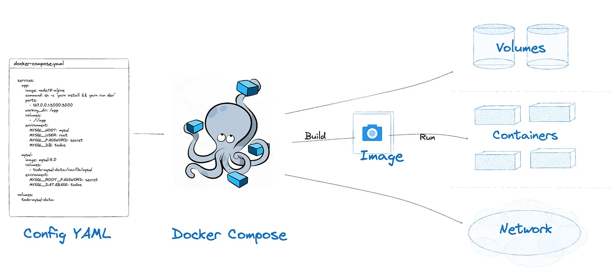
Basic Yaml file
YAML is a human-readable data serialization language that is often used for writing configuration files. Depending on whom you ask, YAML stands for yet another markup language or YAML ain’t markup language (a recursive acronym), which emphasizes that YAML is for data, not documents.
YAML files use a .yml or .yaml extension, and follow specific syntax rules. “What do the 3 dashes mean?” 3 dashes (---) are used to signal the start of a document, while each document ends with three dots
#Comment: This is a supermarket list using YAML
#Note that - character represents the list
---
food:
- vegetables: tomatoes #first list item
- fruits: #second list item
citrics: oranges
tropical: bananas
nuts: peanuts
sweets: raisins
Map vs List in Yaml
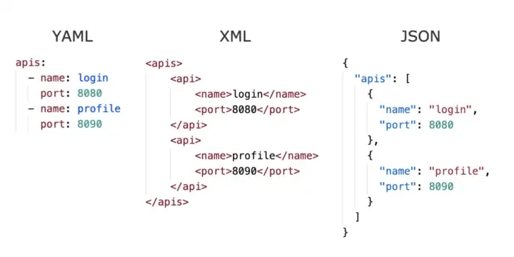
### Reading understand map and list in yaml
Example Student record can represent in yaml format
#Comment: Student record
#Describes some characteristics and preferences
---
name: Martin D'vloper #key-value
age: 26
hobbies:
- painting #first list item
- playing_music #second list item
- cooking #third list item
programming_languages:
java: Intermediate
python: Advanced
javascript: Beginner
favorite_food:
- vegetables: tomatoes
- fruits:
citrics: oranges
tropical: bananas
nuts: peanuts
sweets: raisins
Workshop 5.1 Wordpress Blog
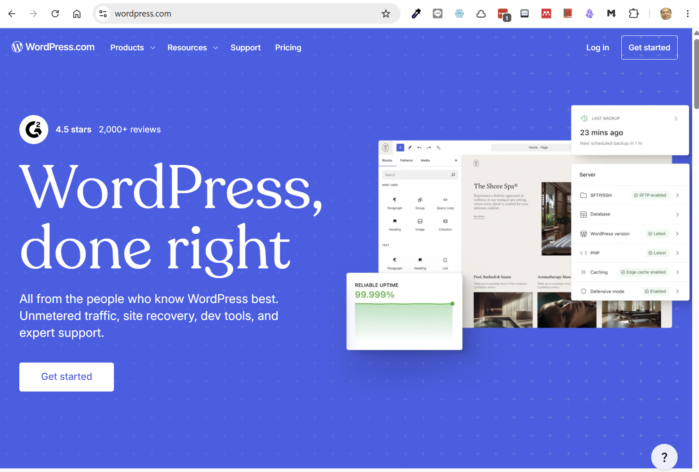
cd ~
mkdir wordpress
cd wordpress
cat > docker-compose.yaml << 'EOF'
services:
wordpress_db:
image: quay.io/sclorg/mariadb-118-c10s
restart: always
environment:
MYSQL_ROOT_PASSWORD: wordpress
MYSQL_DATABASE: wordpress
MYSQL_USER: wordpress
MYSQL_PASSWORD: wordpress
networks:
- wordpress_net
volumes:
- wordpress_data:/var/lib/mysql
wordpress:
depends_on:
- wordpress_db
image: wordpress:latest
restart: always
ports:
- "80:80"
environment:
WORDPRESS_DB_HOST: wordpress_db:3306
WORDPRESS_DB_USER: wordpress
WORDPRESS_DB_PASSWORD: wordpress
WORDPRESS_DB_NAME: wordpress
networks:
- wordpress_net
volumes:
- wordpress_web:/var/www/html
volumes:
wordpress_data: {}
wordpress_web: {}
networks:
wordpress_net: {}
EOF
# check firewall
sudo firewall-cmd --permanent --add-port=80/tcp
sudo firewall-cmd --reload
sudo firewall-cmd --list-all
# start service
docker compose up -d
docker compose ps
# stop container
# remove only container , keep volume
docker compose down
-or-
# stop will remove container and volume
docker compose down -v
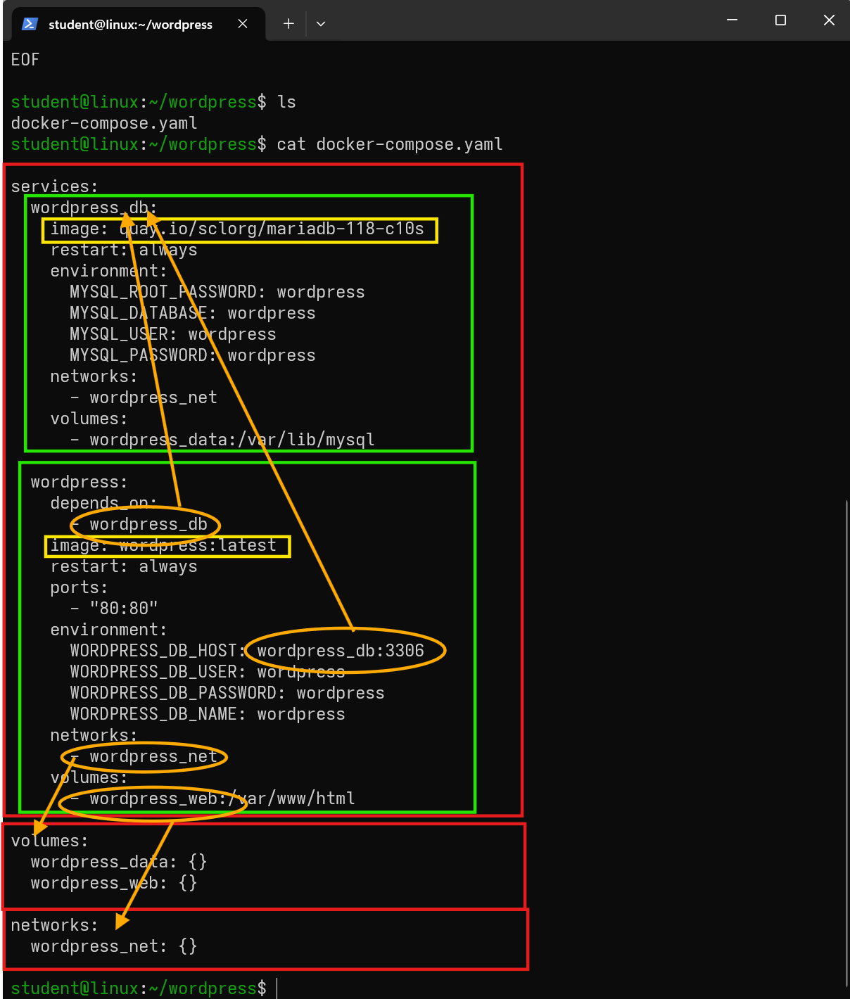
Tasks:
- Capture screen output of command
docker compose up -ddocker compose ps
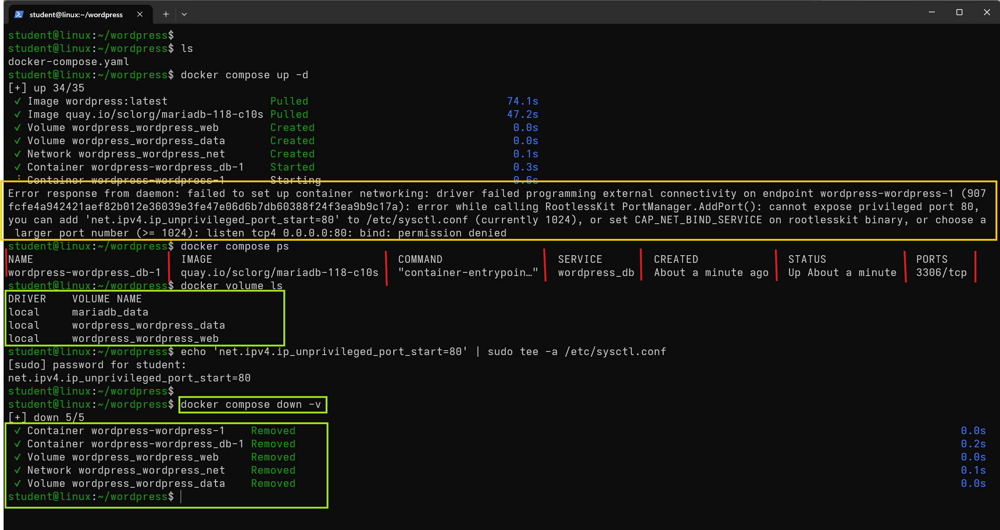
Error response from daemon: failed to set up container networking: driver failed programming external connectivity on endpoint wordpress-wordpress-1 (907fcfe4a942421aef82b012e36039e3fe47e06d6b7db60388f24f3ea9b9c17a): error while calling RootlessKit PortManager.AddPort(): cannot expose privileged port 80, you can add 'net.ipv4.ip_unprivileged_port_start=80' to /etc/sysctl.conf (currently 1024), or set CAP_NET_BIND_SERVICE on rootlesskit binary, or choose a larger port number (>= 1024): listen tcp4 0.0.0.0:80: bind: permission denied
Fix permission
# modify /etc/sysctl.conf
echo 'net.ipv4.ip_unprivileged_port_start=80' | sudo tee -a /etc/sysctl.conf
# reload
sudo sysctl -p
-or-
sudo sysctl --system
# verify
sysctl net.ipv4.ip_unprivileged_port_start
docker compose down -v
docker compose up
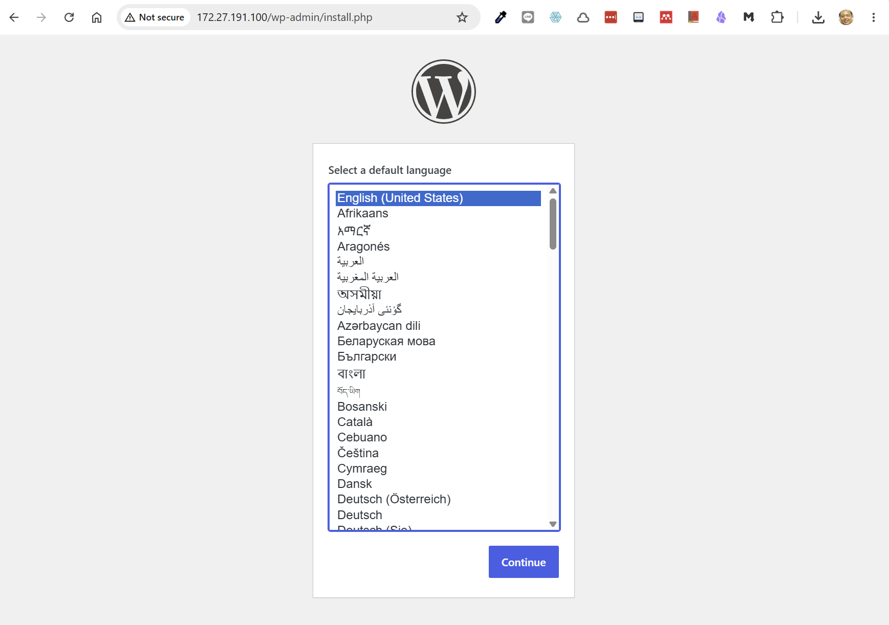
Docker volume
Docker volumes are a feature of Docker that provide a way to persistently store and manage data in containers. A volume is a directory or a named storage location outside the container’s file system that is accessible to one or more containers. It allows data to be shared and retained even when containers are stopped, started, or removed.
$ docker volume ls
$ docker volume inspect <volume_name>
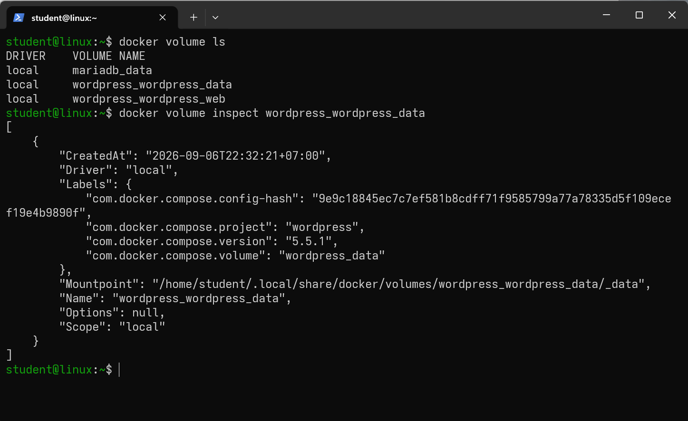
Reuse docker volume
$ docker run -it --rm -v wordpress_wordpress_web:/mnt/volume quay.io/centos/centos:stream10 /bin/bash
[root@cb85c783f4d3 /]# ls -l /mnt/volume/
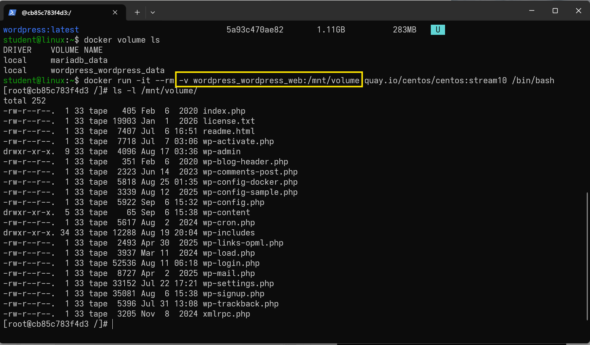
Workshop 5.2 Flash Web
Step 1 Setup project
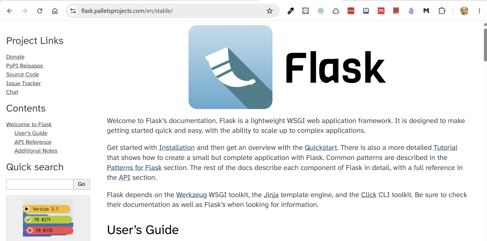
-
Create a directory for project
$ cd ~ $ mkdir flask-demo $ cd flask-demo -
create
app.pyin you project directory
cat > app.py << 'EOF'
import os
import redis
from flask import Flask
app = Flask(__name__)
cache = redis.Redis(
host=os.getenv("REDIS_HOST", "redis"),
port=int(os.getenv("REDIS_PORT", "6379")),
)
@app.route("/")
def hello():
count = cache.incr("hits")
return f"Hello from Docker! I have been seen {count} time(s).\n"
EOF
hits
-
Create
requirements.txtcat > requirements.txt << 'EOF' flask radis EOF -
Create Dockerfile
cat > Dockerfile << 'EOF' FROM python:3.12-slim WORKDIR /code ENV FLASK_APP=app.py ENV FLASK_RUN_HOST=0.0.0.0 # Copy requirements first to leverage Docker cache COPY requirements.txt . # Install dependencies (wheels will just work!) RUN pip install --no-cache-dir -r requirements.txt COPY . . EXPOSE 5000 CMD ["flask", "run", "--debug"] EOF -
Create
.envcat > .env << 'EOF' APP_PORT=8000 REDIS_HOST=redis REDIS_PORT=6379 EOF -
Create
.gitignorecat > .gitignore << 'EOF' .env *.pyc __pycache__ redis-data EOF - list files in folder with
ls -la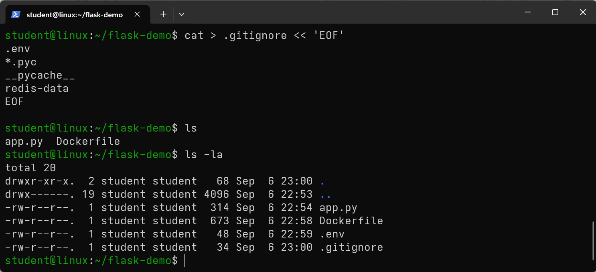
Step 2
- create docker-compose.yaml (or just compose.yml)
cat > docker-compose.yaml << 'EOF'
services:
web:
build: .
ports:
- "${APP_PORT}:5000"
environment:
- REDIS_HOST=${REDIS_HOST}
- REDIS_PORT=${REDIS_PORT}
redis:
image: redis:alpine
EOF
-
open firewall port 5000/tcp
sudo firewall-cmd --permanent --add-port=8000/tcp sudo firewall-cmd --reload sudo firewall-cmd --list-all -
run start application
# run with `--build` option $ docker compose up -d --build $ docker compose ps -a
Tasks
- Capture screen command
docker compose up -danddocker compose ps
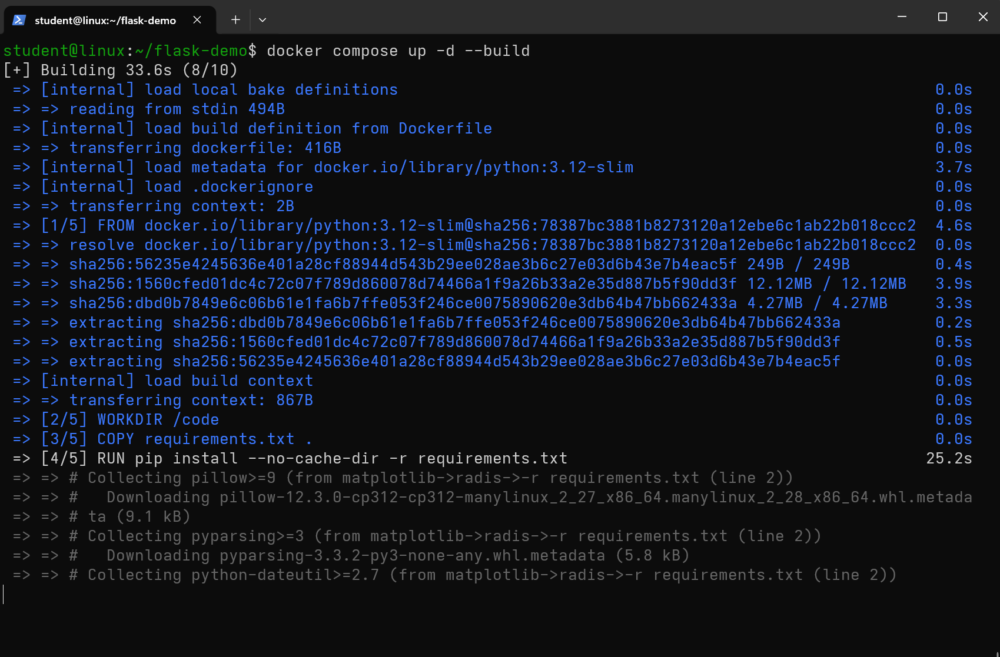
- Capture web
http://<your-ip>:5000
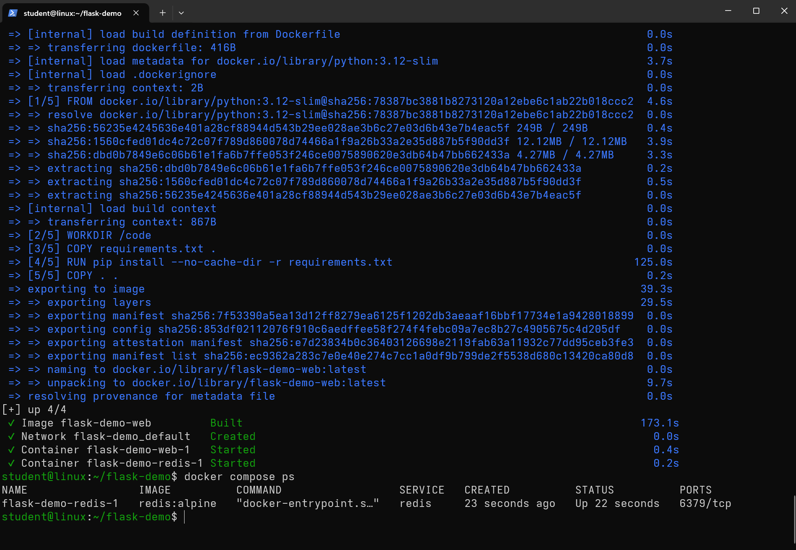
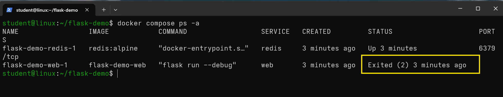
monitor log with command docker logs
docker logs flask-demo-web-1
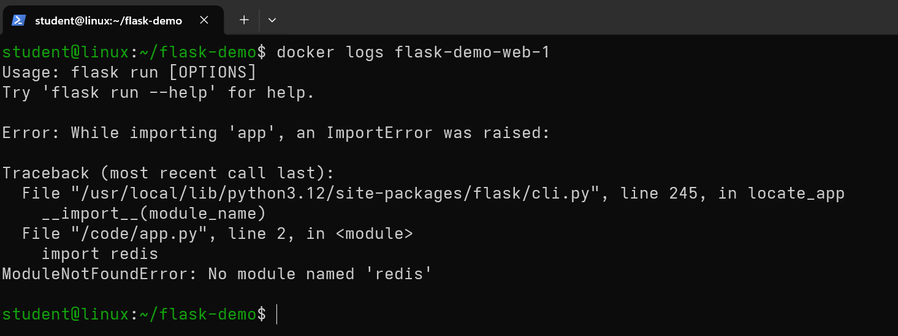
Task Fix app.py and run again
hint
Why This Happens Your requirements.txt does not include the redis package. The pip install -r requirements.txt step installed only the packages listed in that file. Since redis wasn't there, it wasn't installed. The Flask app expects it, so it crashes at runtime.
- After fix then copy web screen
Workshop 5.3 Data science jupyter lab
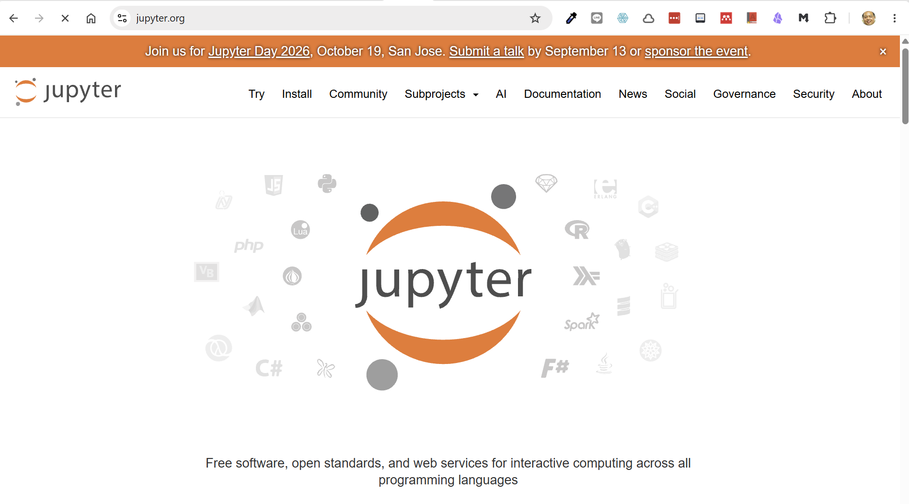
- setup project
cd ~ mkdir jupyter cd jupyter mkdir notebooks
2 Create docker-compose.yaml
cat > docker-compose.yaml << 'EOF'
services:
jupyter:
image: jupyter/datascience-notebook:latest # Official data science image
container_name: jupyter-lab
restart: unless-stopped # Autorestart policy
ports:
- "8888:8888" # Port mapping
volumes:
- ./notebooks:/home/jovyan/work # Persistent storage
environment:
- JUPYTER_TOKEN=password123 # Access token (change this!)
- JUPYTER_ENABLE_LAB=yes # Enable Lab interface
- TZ=Asia/Bangkok # Time zone (adjust as needed)
EOF
3 Open firewall
sudo firewall-cmd --permanent --add-port=8888/tcp
sudo firewall-cmd --reload
sudo firewall-cmd --list-all
4 Start application
$ docker compose up -d
Task
- docker compose ps
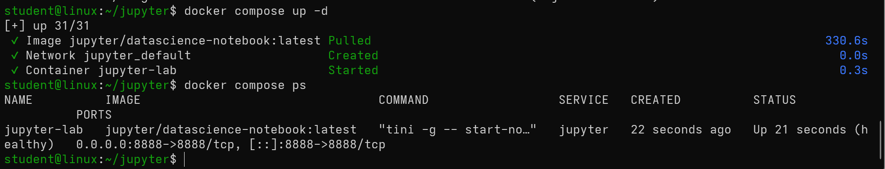
- Copy screen jupyter lab
- password is password123
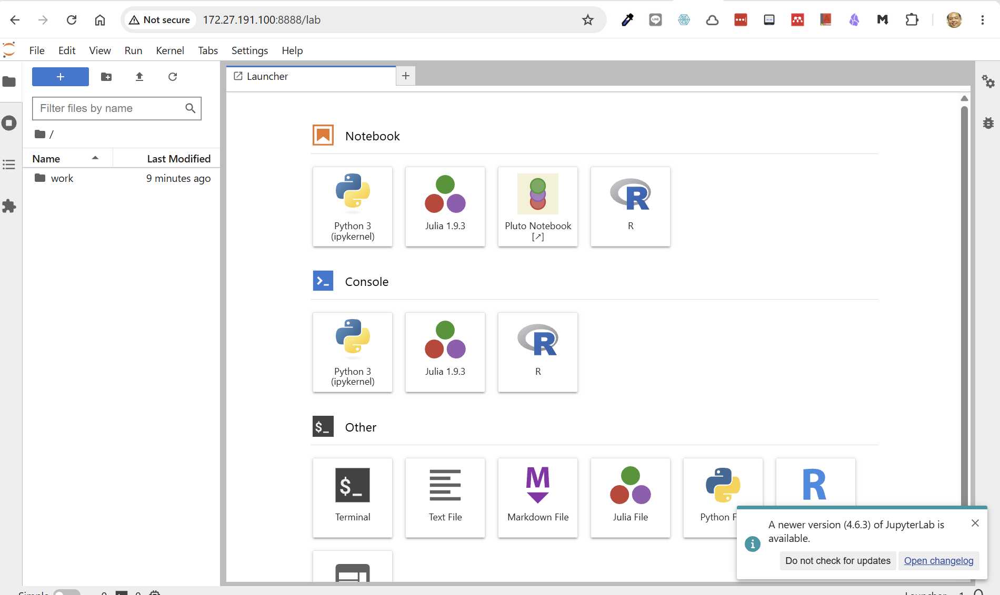